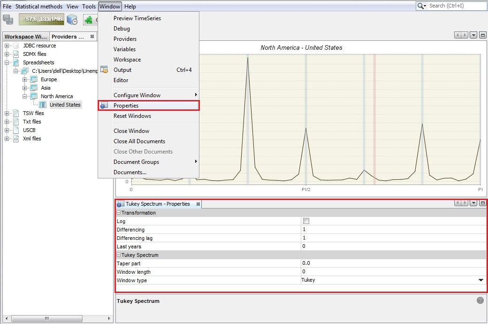
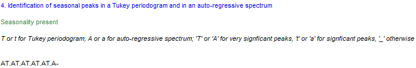

GUI: data visualization and time series tools
In this chapter
This chapter describes time series generic tools available in the Graphical User Interface:
- data visualization
- spectral analysis tools
- aggregation
- differencing
- tests
Additional chapters related to GUI features, provide information on:
Data visualization
Container includes basic tools to display the data. The following items are available: Chart, Grid, Growth Chart and List.

Several containers can be opened at the same time. Each of them may include multiple time series.
Chart plots the time series as a graph. This function opens an empty window. To display a given series drag and drop the series from the Providers window into the empty window. More than one series can be displayed on one graph. The chart is automatically rescaled after adding a new series.

The series to be viewed can be also dragged from the other windows (e.g. from the Variables window) or directly from the windows that display the results of the estimation procedure.

To adjust the view of the chart and save it to a given location use the local menu, which is displayed after right-clicking on the chart. The explanation of the functions available for the local menu is given below.

To display the time series value at a given date, hover over it with the cursor. Once the time series is selected by clicking on it with the right mouse button, the options dedicated to this series are available.

A list of possible actions includes:
Open – opens selected time series in a new window that contains Chart and Grid panels.
Open with – opens the time series in a separate window according to the user choice (Chart & grid or Simple chart). The All ts views option is not currently available.
Save – saves the marked series in a spreadsheet file or in a text file.
Rename – enables the user to change the time series name.
Freeze – disables modifications of the chart.
Copy – copies the series and allows it to be pasted to another application e.g. into Excel.
Paste – pastes the time series previously marked.
Split into yearly components – opens a window that presents the analysed series data split by year. This chart is useful to investigate the differences in time series values caused by the seasonal factors as it gives some information on the existence and size of the deterministic and stochastic seasonality in data.
Remove – removes a time series from the chart.
Select all – selects all the time series presented in the graph.
Show title – option is not currently available.
Show legend – displays the names of all the time series presented on the graph.
Edit format – enables the user to change the data format.
Color scheme – allows the colour scheme used in the graph to be changed.
Lines thickness – allows the user to choose between thin and thick lines to be used for a graph.
Clear – removes all the time series from the chart.
Show all – this option is not currently available.
Export image to – allows the graph to be sent to the printer and saved in the clipboard or as a file in a jpg format.
Configure – enables the user to customize the chart and series display.
Grid enables the user to display the selected time series as a table. This function opens an empty window. To display a given series drag and drop the series from the Providers window into the empty window. More than one series can be displayed in one table.

To display options available for a given time series, left click on any time series’ observation.

The options available in Grid are:
Transpose – changes the orientation of the table from horizontal to vertical.
Reverse chronology – displays the series from the last to the first observation.
Single time series – removes from the table all time series apart from the selected one.
Use color scheme – allows the series to be displayed in colour.
Show bars – presents values in a table as horizontal bars.
Show crosshair – highlights an active cell.
Zoom – option for modifying the chart size.
When none of the series is selected, the local menu offers a reduced list of options. The explanation of the other options can be found below in the ‘Local menu options for chart’ figure in the Container section.

The Growth chart tab opens an empty window. Once a given series is dropped into it, Growth chart presents the year-over-year or period-over-period growth rates for the selected time series. More than one series can be displayed in a table. The growth chart is automatically rescaled after adding a new series.

A left click displays a local menu with the available options. Those that are characteristic for the Growth chart are:
Kind – displays m/m (or q/q) and y/y growth rates for all time series in the chart (previous period and previous year options respectively). By default, the period-over-period growth rates are shown.
Edit last year – for clarity and readability purposes, only five of the last years of observations are shown by default. This setting can be adjusted in the Options section, if required.
The explanation of other options can be found below in the ‘Local menu options for chart’ figure in the Container section.
The List tab provides basic information about the chosen time series, such as; the start and end date, the number of observations and a sketch of the data graph. This function opens an empty window. To display information, drag and drop the series from the Providers window into the List window. A right click displays the local menu with all available options. Apart from the standard options, the local menu for List enables marking the series that match the selected frequency (yearly, half-yearly, quarterly, monthly) by using the Select by frequency option. An explanation of other options can be found below in the ‘Local menu options for chart’ figure in the Container section.

For a selected series a local menu offers an extended list of options. The explanation of the functions available for the local menu is given below in the ‘Local menu options for chart’ figure in the Container section.

Spectral Analysis
Spectral graphs are available from: Tools → *Spectral analysis.


Auto-regressive spectrum
When the first option is chosen JDemetra+ displays an empty Auto-regressive spectrum window. To start an analysis drag a single time series from the Providers window and drop it into the Drop data here area.

When displaying an Auto-regressive spectrum the number of observations, data transformations and other options such as the specification of the frequency grid and the order of the autoregressive polynomial (30 by default) can be specified by opening the Window → Properties from the main menu.

The Auto-regressive-Properties window contains the following options:
Log - log transformation of a time series;
Differencing-transforms a data by calculating a regular (order 1,2..) or seasonal (order 4, 12, depending on the time series frequency) differences;
Differencing lag-the number of lags that the program will use to take differences. For example, if Differencing lag=3 then the differencing filter does not apply to the first lag (default) but to the third lag.
Last years-a number of years at the end of the time series taken to produce autoregressive spectrum. By default, it is 0, which means that the whole time series is considered.
Auto-regressive polynomial order-the number of lags in the AR model that is used to estimate the spectral density. By default, the order of the autoregressive polynomial is set to 30 lags.
Resolution-the value 1 plots the spectral density estimate for the frequencies \(\omega_{j}=\frac{2\pi j}{n}\), where \(n \in (-\pi;\pi)\) is the size of the sample used to estimate the AR model. Increasing this value, which is set to 5 by default, will increase the precision of this grid.
Periodogram
Choose Tools →Spectral analysis → Periodogram and drag and drop a series from the Providers window to the empty Periodogram window.
The sample size and data transformations can be specified by opening the Window → Properties, in the main menu. The Periodogram- Properties window contains the following options:
Log - log transformation of a time series;
Differencing-transforms the data by calculating regular (order 1,2..) or seasonal (order 4, 12, depending on the time series frequency) differences;
Differencing lag-the number of lags that you will use to take differences. For example, if Differencing lag=3 then the differencing filter does not apply to the first lag (default) but to the third lag.
Last years-the number of years at the end of the time series taken to produce periodogram. By default it is 0, which means that the whole time series is considered.

Example of a periodogram 
Periodogram’s properties
Tukey spectrum
Choose Tools → Spectral analysis → Tukey spectrum and drag and drop a single series from the Providers window to the empty Periodogram window.
The Tukey spectrum estimates the spectral density by smoothing the periodogram.
Options for the Tuckey window can be specified by opening the Window → Properties from the main menu. The Periodogram- Properties window contains the following options:
Log - log transformation of a time series.
Differencing -transforms the data by calculating regular (order 1, 2..) or seasonal (order 4, 12, depending on the time series frequency) differences.
Differencing lag-the number of lags that you will use to take differences. For example, if Differencing lag=3 then the differencing filter does not apply to the first lag (default) but to the third lag.
Taper part–parameter larger than 0 and smaller or equal to one that shapes the curvature of the smoothing function that is applied to the auto-covariance function.
Window length–the size of the window that is used to smooth the auto-covariance function. A value of zero includes the whole series.
Window type–it refers to the weighting scheme that it is used to smooth the auto-covariance function. Available windows types are: Square, Welch, Tukey, Barlett, Hamming and Parzen.

Aggregation
Aggregation calculates the sum of the selected series and provides basic information about the selected time series, including the start and end date, the number of observations and a sketch of the data graph, in the same way as in the List functionality. Aggregation opens an empty window. To sum the selected series, drag and drop them from the Providers window into the Aggregation window. Right click displays the local menu with the available options. The content of the local menu depends on the panel chosen (the panel on the left that contains the list of the series and the panel on the right that presents the graph of an aggregate). The local menu for the list of series offers the option Select by frequency, which marks all the series on the list that are yearly, half-yearly, quarterly or monthly (depending on the user’s choice). The explanation of the other options can be found below in the ‘Local menu options for chart’ figure in the Container section. The local menu for the panel on the left offers functionalities that are analogous to the ones that are available for the List functionalities, while the options available for the local menu in the panel on the left are the same as the ones available in Chart (see Container).

Differencing
The Differencing window displays the first regular differences for the selected time series together with the corresponding periodogram and the PACF function. By default, the window presents the results for non-seasonally and seasonally differenced series (( \(d = 1,D = 1\))). These settings can be changed through the Properties window (Tools → Properties). A description of a periodogram and the PACF function can be found here.

Typical results are shown below. The bottom left graph presents the partial autocorrelation coefficients (vertical bars) and the confidence intervals. The right-click local menu offers several functionalities for a differenced series. An explanation of the available options can be found below in the “Local menu options for chart” figure in the Container section.

For the Partial autocorrelation and the Periodogram panels the right-button menu offers “a copy series” option that allows data to be exported to another application and a graph to be printed and saved to a clipboard or as a .jpg file.
Tests
Here we describe describe the GUI access to and display of tests. The underlying methods are detailed in this chapter
Seasonality Tests
QS test
The test can be applied directly to any series by selecting the option Statistical Methods >> Seasonal Adjustment >> Tools >> Seasonality Tests. This is an example of how results are displayed for the case of a monthly series:

It is also visible in Main results panel and in Diagnostics node when an SA processing has been carried out.
Friedman test for stable seasonality
The test can be applied directly to any series by selecting the option Statistical Methods >> Seasonal Adjustment >> Tools >> Seasonality Tests. This is an example of how results are displayed for the case of a monthly series:
If the null hypothesis of no stable seasonality is rejected at the 1% significance level, then the series is considered to be seasonal and the outcome of the test is displayed in green.
It is also visible in Diagnostics node when an SA processing has been carried out.
Identification of spectral peaks
In a Tukey spectrum
The test can be applied directly to any series by selecting the option Statistical Methods >> Seasonal Adjustment >> Tools >> Seasonality Tests. This is an example of how results are displayed for the case of a monthly series:

JDemetra+ considers critical values for \(\alpha=1\%\) (code “T”) and \(\alpha=5\%\) (code “t”) at each one of the seasonal frequencies represented in the table below, e.g. frequencies \(\frac{\pi}{6}, \frac{\pi}{3}, \frac{\pi}{2}, \frac{2\pi}{3}\text{and} \frac{5\pi}{6}\) corresponding to 1, 2, 3, 4, 5 and 6 cycles per year in this example, since we are dealing with monthly data.
In an AR Spectrum
The test can be applied directly to any series by selecting the option Statistical Methods >> Seasonal Adjustment >> Tools >> Seasonality Tests. This is an example of how results are displayed for the case of a monthly series:
JDemetra+ considers critical values for \(\alpha=1\%\) (code “A”) and \(\alpha=5\%\) (code “a”) at each one of the seasonal frequencies represented in the table below, e.g. frequencies \(\frac{\pi}{6}, \frac{\pi}{3}, \frac{\pi}{2}, \frac{2\pi}{3}\text{ and } \frac{5\pi}{6}\) corresponding to 1, 2, 3, 4, 5 and 6 cycles per year in this example, since we are dealing with monthly data.
In a Periodogram
The test can be applied directly to any series by selecting the option Statistical Methods >> Seasonal Adjustment >> Tools >> Seasonality Tests.